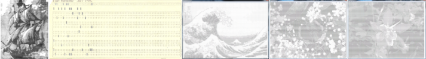
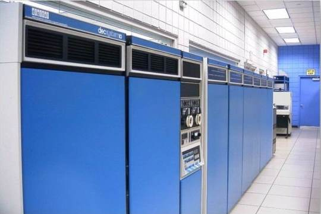
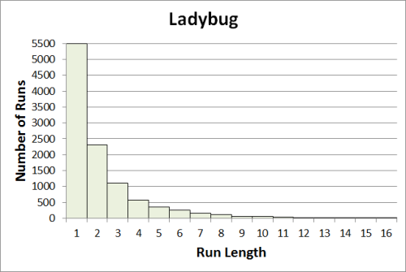

Text Art

Text art is made up of text usually drawn
from a small set of typewritten characters that includes letters and punctuation.
This is my text art story, which stretches from 1975 to 2011, from manual typewriters
and cardpunches to computer-generated text art.
Typewriter Art (1975-1976)
I grew up in Australia in the 1970s. There wasn't much for a geek like me to do.
There were four TV channels, but they were all monochrome and low-res.
Air-conditioning was nonexistent, and the outside looked like this.
I did, however have a manual typewriter. It was completely manually powered, no electricity was involved
at all. As you can see below, it was a portable.
I read about Typewriter Art in some magazine article or other and decided to
try my hand. What did I have to lose? Here is my first attempt.
It's made from four sheets of typing paper glued together.
If you look close up, it's made using just a few letters including M, I, and M overstruck with
X or $ to get the darkest shade approaching black.
I found that I could get about 64 characters per line on a single sheet of typing paper,
so this is about 128 characters wide.
I made a couple of copies of it and traded one for a goldfish tank. I remember doing some
others, including portraits of Neil Diamond and Sammy Davis, Jr. (hey, it was the 70s).
A couple of them made it into the local newspaper. Gradually, though, I lost interest.
It was a lot of work.
Text Art on a Mainframe (1977-1979)
In 1977 I went off to the University of Queensland for an undergraduate degree.
There I was introduced to the mysteries of programming the DEC PDP-10.
I believe that it was a KA-10 which supported just over 1MB of memory arranged into 256K 36-bit words (no, that is
not a typo).

It had a 132-column printer something like
this one (but a different brand, I assume). I soon began to get ideas. I could make large typewriter art
without having to glue together pieces of paper.
The problem was getting the data into the computer. All we had were punchcards that looked like this.
Geeks typically carried around card decks the way we carry thumb drives today. Of course, we
managed to swipe a card box from a friendly sysop.
Punchcards were punched at a desk-sized machine like this.

I couldn't face retyping my ship picture yet again, particularly under these conditions.
There was also the minor but annoying problem that the punchcards were only 80 columns wide, compared to the
ship's width of about 128 characters.
To save myself some time,
I reinvented Run Length Encoding,
abbreviated RLE. The origins of RLE are unclear. It was certainly known at
MIT's Haystack Research Facility in 1966.
The earliest patent I can find is
US
Patent 4,586,027, April 29, 1986
.
I wrote a program
(probably in assembly code) that inputs, for example "5M6X7I", decodes
it as five Ms, six Xs, and 7Is, and outputs
"MMMMMXXXXXXIIIIIII".
After punching up a deck of cards with the run-length encoded image,
I was able to print out as many copies of my ship as I wanted to.
Computer Generated Text Art (2011)
We can adapt our methods to output text suitable for printing
by simply sampling the input image at a different rate on the vertical axis than the horizontal axis.
Here are some low-res examples (128 characters wide).
You can copy
and paste the text to Notepad if you're skeptical.
Links to higher resolution versions can be found below.
****:***:::::::::::::::::::::::::::::::::::::::::::::::::::::::::::.::::::::::::::.:.::.::::::::::::::.:::::::::::::::::::::::::
****:::::::::::::::::::::::::::::::::::::::::::::::::::::..:::::::..:....::.::......:.::::...:::::..:..:..:..::.:::::::..:.:::::
***::::::::::::::::::::::::::::::...:::::.:::..:.:..........::::::.::...:.:.:..:.....::.:.........................:::::::...::::
**:::::I***I:::::::::::::::::::::::::::...:.::...:::....:.:.:::::...:.....:............::......:::......:...:::...:::::::.::..::
*:::::::*I:*:::::::::::::::::::::::::::::**IV......I*:::::::::::::.::..::...:::.::::..:.........::::....::.....::.::::::.:::::::
**::::::IF:*:::::::::::::::::::::::I:............:::*:..*...:.:::...::..:.......:............:..:.....:.::.....:....:::..:::..::
***:*::::V.::::::::::::.........I...............:::...::I..I:::::.::..:................................:.:..:...:::....:::::.:::
*::::*:*:*:*:::::::::.......I...............II:I:II:...:.*...:.*..:..::..................................:.:::::::.:::::::::::::
*:::I:::.:.*::::.:::::...::........*:.:...I*.:I:*IIV:.::***I:I:::.::.::::................................:::::::::::::::::::::::
********::*::*::::::...I.........:**:*III:IIIFVFNF:*I..**::.:*.I*:::::...........................::::..:::::::::::::::.:::::::::
***VF*:****:*::::::::V.........**:*:.::NFFFIIFNNNNF..::*I:*.:.::::::.............:..............:::.::::::::::::::::::::::::::::
***IV***I:::*:::::V..........::.::*NF*FNNFFNNVFFFNNNV:::.I.*..:.....I:.**...................:....:::::::::::::::::::::::::::::::
*******I::****::::...........INFFN*FNNNVNNNNVFFNNVFIFV:II*::*:*..**I:*:.::......................::.:::::::::::::::::::::::::::::
****I***********.............INFFNFNNNVNNFNVNNNNVFNNNNN:..::.:*.::..I....*:........................:::::::::::::::::::::::::::::
*************V:...............:FNNVFNFVFNNINNFVFNNVNNFF*...I*.*II..::..:.I.I:............................:.:...:.....:::::::::::
II********VI:.:....................:I::NNFFFVFFNNFNIFVF:*.:*::::.::..*:II:..:::.:.:....................................:.:.:.:.:
FFFFFFVFV:::.:::....::I*......I...:II:VFNVNIFV:NFNFFF:......:.:*:I:..I:**I..:..................................................:
*IVV*::.:.:...::I:::I*:...:..::::V:..FNI.V*INFIFFFFF:.........:I..::*.*.::*:::..:..............................................:
:::::::::*:...:*::.:I::*I.:*.*I::II.:.:.:VFF*FFNNVFF...:...........*I****...:.....................................:..........*..
:::*I***I*V:*FFV*::.***:I.*:.****I:::*::.:.*I*:NNVFI:................:.:..:::::..::.........:......................:.:.....*....
:::::*V**I*:.NFNIFNV:::*IV*.::FNVNVFIN**:I*FVFNFNFV::...:..:.::.::.::..:::.::...:...............:.....:.................:*.....:
::I***::I*:*:IVFVNFVV.:I**:*...VF*:FVFIVVVVF:NFINNFI........::.....::...............................::........:......:........:*
:V****INF*:*V*V*FINNF:**I*::I:*.IIIFNFNFNVVIFNFFNNFV........:.........................::...:.............:.:.:::......I........:
::*:IV::FNVVNNIFFFF:*IV::*VFN*II..*INNFNFFFNVVFVNNNVI::::::.:::::..:::...:....:.:...::.:........:::..:::::::::::.I..I......I*:*:
I:*NVNV:*V*VNFFFFFVV*:FFFIFFFI*:*N**VVNFNNN**NFIINNF.V:::::::::::::.:.:.:::.::::.::.:::::::::::::::::::::::::::*:.*I.......:.VV*
I::::::I:I**VFFI*NIFF*FVNVV:FNFFVIFFFFFVN*......*VFFNFF:::*::::::::::::::::::::::::::::::::::*:::***********IIFFI*......II*::VVN
**::*II:::..*:IINNFFFFFFVFFNFFFNFVVFF*FF:...........N*NVI*I************.************************IIIIIIIIII*FVVFI.........I..IFFF
****I*:I*:*I**I:*IVINFFFFNVFFNFVFVFIIF...............IVNFIII:IIII**IIIIIIIIIIIIIIIIIIIIIIIIIIIIIIVVVIIIIIFV*FV.......**:F:VFVFFF
*I****I:::I*V*:F:I:**IIVIVFN*IFNVVIF........I:.......***FFFVIVIIVVVIVIVVIIIVVVIII:*IIIIIIIVIVVVVVVVVVVVFFVVV....*.:.:VIFFFFFNNN*
***NNNVNF*NFIII*I**I:I::I*I*::*VF*.........***I:.......:..*NFIIVVVVVVVVVVVVVVVV.....IIIVVVVVVVVVVVVIVVII:*...*:.:..VFVFFFFF::::.
:::FNVFVNIVFFFI*II*I**IIFFF*F:..........:**I:*..........::.....VVVVVVVVIVVVVI......:..*VVVVVVVVVFF*::*I........VVFINFFF:.:VF....
:::FFNFNFFFFNIFI*:I*V*::V:.........:::.I:.*:I*.**..:....:*.V:.:.VVVVVVVV**:*IFFN.IFFVI.:VFF*:*::*V...**.I*.VI*IVV:.:.:VVV..:.::
:::::::*FFNFVI:..........:..........I:..:**.I...::*..:::....II*.....IFNNNNNNNN*VVVVVFVVFVVFFVV:.....**VVVVVV*..:....*VV:.:::::::
:::.:::::..:....::......:V::::..II.I*II::::.I:I..*.*:VV.::..IIVF.:VI:.*...*:.:*II***::.......*I.FIF***..:::::.:VFFVII.::::::IVFF
::::*****:......I::.....:*I::::..::::*:......:::..FVVF*F*:*F..IVFV:V**:FF*::.........:............:::..FFFFFFFFFFF..:::::FFVVFFV
::::::I***I*.I.*:::.I..*I*:.*.I.......*.I*:..*::..*:F*:*I:*:V...*FFIFFFV*FFV::.....:..::...*.:..::**:.VVVFVVVVVI....:IFNNNNNNFI*
:::::::::.**::::::.*NV.I:.I*:*:..:V.:::::..::I.**..FNFVNI**FFV:V...*FNNFFIINFF::::.:I*::.:::::VFVVVVI*:*VNNFF*..:::::::::*VVFFFN
::::::*V:I*VF*IFV*NVFFI:**::.VI::::*.::I.:*.:.I:*:..FNFFFFV*IIV:*FVVIV.INFFFIFFNFI::..FFFFI::VNNFFI:*IIVFFV..:::::::VNNNNFVFNV**
::::FVVFF*NNFFNNNNFFV::I::.I*I::.....:*::VF.FF*::*:..:VNFFNFF***III:II:*V*::IFNFFNNFFF*:.IFNFFFFFFFFFFVI......:.:::*I::..:VFFFFF
:::NNVFVFNNFNFNFVV::*V*F.FNVN:I:::*IV:::.IFFNVIVI.:::..NNFFFNVN*II**IIVIVIV***********IIIV:FVIF*VFIV.....:*VFFFFFFFFFNNNFFFFFFFF
::NFVNFVIN*VFN*NNIIFINVFNNINVNN:.::..........FNN:VVF.....:NFFFNNVF*I:::::*IIIIIV***********:**I*...::::**I:IFNNFNNNNNNF*::IIVFNN
::NVFFNVNFNVNNVNNNVNNIFNFVNFNN**:::IVNN.I.FN*IIINIVNNI:V:...VNNFNFNFNV**::::::::::::::*II*....:FNFFNNNFFFNNNNNF:.......:::::::..
.:NINNVFFFNIFNVNFNVNFVNNNVNVNNF:::IN:*V**NI:V::VFIFNNNFV***I:...:VFFFNNFFFNNNNNNNV:.......:::......::::....:::::::::YRREBRAP*NAI
FNNNNNNNFNNNNNNNNNNNFFFNNNNNMMMNNNNNNNNNNNNNNNNNNNNNNNNNNMMMFNFVVVVFFFFFFNNNNNFNFFFNNFNNNMMMMMMMNNMMMMMMNFFFVVFFFNNFFNNMNNNNNNNN
NNNNNMNNFFNNNNNNNNNNNFFNNNNNMMMMMMMNNMNNNNNNNNNNNNNNNNNFFNMMFNFVVFFFFFFNFNFFNNFNNFFNNNNNMMMMMMMMMMMMMMMMMNFFFVFFFFFFFNNNNNNNNNNN
FFFFFFFNNMMMMNNMMNNNNNNNNNNFFFNMNNNNNNNNNNNNNNNNNNNNNNNNNFFNNNFFFFFFFFFFNNNNNNFNNNNFNNNMMMNNMMMMMMMMMMMMMMNNFVVFVFFFFNNNNNNNNNNN
NVFFFFFNNNNNNNNNNNMNNNNNNNFNNMMMMNNNNNNNNNNNNNNNNNNNNNNNNFFNNNFFFNNFNNNFNNNNNNNNNNFFNNV$VNMMMMMMMMMMMMNNMMMNNFFVVFFFNNNNNNNNNNNN
NFVVFFFFFNNNNNNNFFNNFFNNNNMMMMMMMMMMMNNNNNNNNNNNNNNNNNNNNNNFNFFFFFFFNNFFNNNNNNNNNNFFNNMMMMMMMMMMMMMMMMNMNNMMNNFFFVFFNNNNNNNNNNNN
NFFFFFNNNNNNFNNNNNFFFNNNNNNNNNNNNNNMMNNNNNNNNNNNNNNNNNNNNNNNFFFFFFNNNNII*I*::$FFFNNNFMMMMMMMMMMMMMMMMMNMMNNNMNFFFFFFNNNNNNNNNNNN
FFFFNNNNNNNNNNNNNNNFNNNNFFNMMMNNNMMMNNNNNNNFNNNNNNNNNNNNNNNNF$$V$FFNNN$IIIIII*I*I*****VNMMMMMMMMMMMMMNNMMMNNMMNFFFFFFNNNNNNNNNNN
MNNNNNFNNNNNNNNNNNFNNNNNNNNMMMMMMMMMMMNNNNNNNNNNNNNNNNNNNNN$VV$$V$$$$N$IIII$II$II*I***I***NMMMMMMMMMMNMMMMMMNNNNFFFNFNNNNNNNNNNM
NNNNNNNNNNFVFFNNNNNMMNNNNNNNFNMMMMMMMMNNNNNNNFNNNNNNNNNNNNNNN$$V$$VV$N$III$$$$$IIIIIIIII*II****::**FNVNMNMMMNNNNNNFNNNNNNNNNNMMM
MMNMNNNNNFNNNFVFFFNNNNNNNNNNNNFNMMMMMNMNNNNNNNNNNNNNNNNNNNNNN$$V$$NNNN$II$$$$$I$$$$IIIIIII*III*I*****$$NMMMMMNNNNNNNNNNNNNNMMMMM
NNMNNNNNNFFNNNNFVVVFFNNNMNNNNMMFFNMMMMMNNNNNNNMMMNNNNNNNNNN$N$$$FNNNNN$$I$$$$I$$$$III$IIIIII*****III$$NMMNMMMMNNNNNNNMNNFVFMMMMN
MNNNNNNNMNNNNNNNNVVFVFFNNNNNNNNNFFFNNNNMNNNNNNNNNNNNNNNNNF$$V$$$$$NMNN$$$$$$I$$$$$V$$I$IIIIIIIII$I*I$$MNMMMMMMMMNNNNFNNNV$VVNNMM
MMNNNNNNNNNNNNFFNNNVNF**********I*********************:*$IIII$$I$VNNNV$$$$VI$$$I$$$$IIIII$$$III$$$$VVFMMMMNMMMMMNNNFNNNV$VVNNNMM
MMMMNMNNNNNNNNNNNFNNII*IIIIIIIIIIIII$IIIIIIIIIII**I*II$$I$VIIVIIVVFN$V$V$$$I$$I$VV$II$$$II$$$I$$$I$$VMMMMMMMMMMMNNFFNNNNNNNNNNFF
FNNMMMNNNNNFFNMMMM**IIIIIIIIIIIII$$$$$$$II$$$$I$$*$$$$II$VV$$VI$VFN$$V$V$VIVVI$$V$IVV$V$$$$$$IIIII$$NMMMMMMNMMMNNFVNNNNMMMNNNNNM
NNNNNNNMNNNFNNMMMM$$IIIII$IIIIIII$$$V$$$$$$I$VV$$VIV$$I$V$VV$$$$VFV$$VVV$I$VIVVVI$V$VVVVVII$$$$$$I$$MMMMMMMMNNFVVNNNNMMMMNNMMMMM
MNNNNNNNNMNNNNNNNNMVVVV$$$$I$$IIIIII$$VV$VVVI$VVVVVIVVVVVVVVVIIV$V$VVFVV$IV$VVVIVVVVVV$$$$$$II$$$$$$MNNNMMMMNNFVFNNMMMNNMMMMMMMM
NNNMMNFFNNNNNNNMMMMMMFFFFVV$$$$$$$$$$I$VVVVVVVIVVFVVVVV$V$$V$$IIVVV$$FVV$$FVVVIVVVVVI$$VVVV$IIIIIII$VMMMMMMMMMFFNNNNNNMMMMMMMMMM
NNNNNNNNNNNNMMMMNNMMMNV$$FFVV$$$$$$$$VV$$VVVVVV$VVVVVVVVVV$V$$IIVVVV$VFF$F$F$$FVVVIVFFVV$$$$$II*IIII$MMMMMMMNFFNMMMMNNMMMMMMMMMM
NNNNNNNNFFFNNNMMVFNMMNNNNMV$V$VV$$$$VVVV$I$VFVFFVVFFF$FV$$$VVV$$$$FV$FFVFFFFVFFF$FVVVIVVVI$$$$IIIII*IMMMMMMMNMMMMMNMMMMMMMMMNMMM
NNNNMMNNNNNNNNMMNNMNFFNMMMMVV$$$$$V$$$VVVVV$$VFVFF$FFFVFFF$VV$VVVVFFVFN$NFNVFF$FFF$VVVVV$$$IIIII$VFMMNFMMMMNNV***IIVMNMMMMMMMMMM
MNNNNNMMMNNNNNNNNNNNNNMMNNMMV$$$$$$$$$VV$VVFVV$FFFF$FFFFN$$$$VVFFVFFFFNFVNVNFFFF$FFF$V$$I$III$$NMMNNNF*****IIIIIIIII$MMMMNNMMMMM
NNMMMMMMMMMNNFFFFFFFFNMNFFNMMV$$$$$V$VV$$V$VVFFV$FFNFFNVFNVV$FNNFNNNFNVNNFNVNNFFFVVVV$$$IIIVVFF$IIIIIIIIIIIII$$$III*IIMMMMMMNNMM
NNNNMMMMMMMMMNNFVVVFFNNF$$VNMMM$II$VVVV$VVV$VFFVFFVNNNFNVNFVV$NNNNFNFNNNVNNNFNNFFV$$III$$*$$$$$$$$I$IIIIIIIIIII********NMMMNMMMM
FNMNNNNNNFFFNMNVFFFFFFFFNFFNMN$***IIII$I$$$$$$$$FFNFVNNFNNNVVVFNNNNNNNNFNNNNNNNFVV$$V$$V$VVV$$III$$$IIIII*IIIII**I**II**VNMMMMMM
FNNNNNNNNNMMMMMMNNMMNNNNNN***IIIII$$$V$VV$VV$$VVVVVNNFFNFNNNVVVNMNNNNFNNNNNNNNNFFVF$VFFFVI$V$V$$$IIIIIIIIIIIIIIIIIIIIII$I$NMMMNM
FFFNNNNFFFFFNMMMMMMMNN$******II$$$$$$$VVVVFFVVVVFFFVFNNFNFNNNVVVMNNNNNNNNNNNNNFNNFFVF$$FV$VV$$V$$$IIIIIII****IIIIII$$$II*NMMMMMM
FFFFFNNNNNNNNNNNI*********IIIIII$$$VVVVVV$FFFFFFFNFNNNFNNNNNNFVVFMMMNNNNNNNNNNNNFFFVFVFFVV$V$I$I$III$IIIII*II******I***$NMMMMMMM
FFNNNNNNN$*IIIIII********IIII$$$$$$$$$VFVFFVFVFNNNFNNNMNNNNNNNFFFMMMNNNNMMMMMNNNVNNF$VV$VV$$$$IIIIII**I**IIIIII*********NMMMMMMM
NNNNNNNNFFI******I********II$I$$$$VVVVVVFF$$VFNNFNNNNNMMMMMNNNNFNNMMMMMMMMMMNNNFNNNFFVVV$$$$IIIIIIIIIIII********II*****NMMMMMMMM
NNNNNNFFNNN********III***IIIII$$VVVVVVVFVVFFFNNNVNNNNNNMMMMMMMMNNFNMMMMMMMMNNNNNFFVVV$III$IIIIIIIIIIIIIIIIIII**I*****NMMMMMMMMMM
NNNFFFNMMMMMN$III*********IIIIII$$$V$$$$VVVVFFFNNNNNNNNNMMMMMMMMNNNNMMMMMMMNNFFVVIVV$$IIII*IIIIIIIIIIIIIIIIIIIIIII*NMMMMMMMMMMMM
NNNNNFMMMMMNNNNIII*IIIIIIIIIIIIIIII$$II$$V$VVF*$FNNNNNNNNMMMMMMMMNNNNNMNNF$$$IIIIIIIIIIIIIIIIIIII$$$$$I$$$II$$$$INNFNNFFFFFMMNMM
NNNNNNNMMMMMMMNMN$IIIIIII$$$$$$$$$I$$$$II$$$$*IIIII$$VFFNNMMMMMMNMNNNNNNIII******I***IIIIIIIIIII$II$$$$$$$$$$$$VVFFNFFFFFFFFFFFF
MNNNNNNNMMNNMMMMNNFFNNV$VVVVV$$$$V$$III$$$I*****IIII$VVVFFNNNNMMMNNNNNFFVVVII****IIIIIIIIII$I$$$$$$$$$$$$$$$VVVFFFFFFFFFFFFFFFVV
MNNNNNNNNNMNNNMMMMNNNNMNMFVVVVV$$$$$I$$II$$II*****IIII$$VVVVFFFF$FFVVIVVV$$$$$V$IIIIIII$$$$$$$$$$$$$$$$$V$VVV$FFFFNFFNNNNNNFNFFF
MMNNNNNNNNNMNFNNMMMMNFNNMMNNMNV$$$$$VV$I$VF$II*****I**IIIII$$$V$I$VVV$IV$$$$$III$$VII$$$$$$$VVVVVVVVVVVFVVFNMNNNNMNMMNMNNMMMMMMM
MMMNNNNNNNNNNNNFFNMMMNNNMMMNNNMMNMNNFNNNNNNVII************IIII$$I$VVV$*V$IIIIIIII$$$$NVVVVVVVVVVFFFNMMMMMMMMNMNNNNNMMMMMMMMMMMMM
MMMMMMNNNNFFNNNFFFFNNNNNNNNNMMMMMMNFNFFNNNFVIIII*********I**IIIII$VVV$$I$$IIIIIII$$$$VMNNNNNMMNMMMMMMMMMNMNNMNNMMMMMMMMMMMMNNNMM
MMMMMMMMNNNNMMMNMNFFNNMMMNNNNMMMMNNNNNNNNNNF$$II***********IIIIII$$V$$$II$IIIIIIII$$$NNNNNMMMMMMMMMMMMNNNMMNNMMMMMMMMMMMMMMMMMMM
MMMMMMMMNNNNNNNNNMNNNNNNMMNNMMMMMMMMNNNFFFFFN$$$II*********II$*II$$$$$I$IIIIII*I$$$VFMNMMMMMMMMMMNMNNNMNNNMMMMMMMMMMMMNFNMMMMMMN
MMMMMMMMMMMMMMMNNNMMNMMMMNNMMMMMMMMFFNMMMMMMMNFI$III*FNMNNF$IIIIIII$IIIIIIIIIIIII$VFNMMMMMMMMNMNNNNNNNNNNNMMMMMMMMMMNNNFFMMMMMNF
MMMMMMMNNMMMMMMMNNNMMMMMNNMNMMMMNNNMMNNNNNNNNNNVNNVFNMMMMMMFIIIIIIIIIIIIIIIII**II$NMNMMMMNMMMNNFFNNNNNNNNNNMMMMMMMMNNNNFFNMMMNFN
MMMMMMMMMNMMMNVFNMNFNMMNNMMNNMMNMNNNNNNNNNNNNNNNNNNNNNNMMMMMN$IIIII$IIII*I*I***IIIFNMMMMMMMMNNNNNNNNNNNNFNNNNNNNNNNNNNNFFNNNNFNN
MNFNMMMMMMNNFFFNMNNFNMNNNNNNNMMMMFFNNNNNFNNNNNNNNNNNNNNNNNNNNNMN$I$$II*****II**INMNNMMMMMMNNNNNNNNNNNNNFFNNNNNNNNNNNNNFFNNNNFNNN
MMMMMMMMMMMNNNNMVVVFNMMNMMMMMMMMMMMMNFNNNNFNNNNNNNNNNNNNNNNNFFFMMMMNFI******FMMNFNMNNNNNNNNFFNNFFFFNNFFFFFFNNNNNNNNNNFFFFNNFMVNF
MNNMMMMMMMMNNNNFVFNNNMNMMMNNNMMMNNNNMMMMMMMFNNNNNNNNNNNNNMMMMNFFFMMNNNMMMMMMMNFFNMNVVFFFFFFFNNNNNNMMMMNNNNNNNNNNNNNNNFFNNNNNNFNN
NNMMMMMMMMMMNNNFNNNMNNFFNNNNNNNNNNNNNNNMMMMMNNNNNNNNNNNNNNNNMNFFFFMFNNMMMMMMMMMMNNNFNNNNMMMMNNNNFNNMMMMMMMNNNNNNNNNNYRREBRAP*NAI
VNVVFFFFVFNIVFFI*V**IIVFVFFFFFNNVIFMMNF:*VNN*:VFVVVVVNNFFFVFNI*II:*:.*VIVVVV*IIVMVIVVFNNNNNFFFNNNNNFNNFNNFFFFFFFVFNNFFFNNNNNFFFV
FMNVFFFFFV.*FNNFFVIIIVFV:VFFFNNNI*INMF:*FFNNI.IFFVIVVFNNFFVVFIIVI*:IV*IIFFI*.IVFNVVVIFNNMMNFFNNNNFVFNMMNNNIFFFFNNNNNNFFFFFNNNFFF
:IVFFVF*.*V*FFFFVIFIVFFFFF**IVFFF**V:*FNNFNMMIIVVVVFVVVNNFVIVVVIVF:*FIVFVI:.VFVNIIVFNNNNNFFNNNNNNNFFFFNNNNNFFFFVNFNFNNFFFFFFFNNN
:*IV.:.IFFI*FFFI:VFFNVVVVVFVI:VFFI::VFNVVIIVNNI*VVVVVIVFFNFVIVFFF**VIVVV*.:VFFIV*IFV**IVFFVFNNFNFVVVIIIIIII****IIVVVNFVI********
FFI.:VFIIFFFVVIIIFNNFFFFFFVVFNVFF.IFIVFVVFNFFV*:IVIIVVVVNNFFFVFV*.IIFVVVI:INNNFFFFVVFFVVFVFV***VVFFFVVVVFN::IFVVVVFFV*..::IVIIVF
INNNVVI*NFFVIIFNVFNNFFFNMMMNFFFFFFVI:.::*FNMMMNNVIIFFFVVIFNNFFFV:*IVFNVVVIIVFVFFFNFNNVVFVFNMMMFNNNNNNFVI**IIVI:.::*IIVFNFFNNNVII
**..FFNNMMNFNFFIVFMNIIIVNMMMNIIFFIVMFIVV:IVNMMMNIFFI*VIVFFFNNFFFIIFFNFVVFFVV*INNNNNNVFNVFNNNMFFMFVI**IVI:.::IIFFFNNNMNFFFFNNFFFF
:IINNNFMMV**VFFNNFVIIIIFFMMM**FFFFIVFFFN:IFFFFFFFFFFIVFVVFNFNNFIIVFFFVVVVNFFFIIIVFNIVVFIVNNVVI:*IVV::*IIVIFFNNNNNNNNNMMNFFVI*:IV
VFNFNNNFN:VFFFNNFFNIIIVFFMNVFF*FFFVIVFFN**VFFFFVVV*IFNVVVVNNNNIVFV*FNNFFVVFNFIVV*IVVFII*I*:IVV*.:I*VVFFNNNMMNFV*..:*I*:::*VNNV*.
FVVFFFNNNFFVFNNNFVVII:INFVFNNFFFFFF.FVIVF*IFFNNNFIVFNI.VVVVVFIIVFV*NNNNNFVFFFFFNMFFVI*:*VV::*VIFII*:I:*V::*VNFNNNNNFNNVIFNN*:*IF
FVNNNNFNNNVFNNF*VFFNIIINNNFV*VMFFFF:IFFFI*IV*:..IVFNFVVVVVVFIIVFNFFMNFVNNNFVFNNFNNI*IV::IVIVI*IIFFIVFNFFFNVVVFI**NNNNFNNI*:VFFFM
VIINFFNNNNNFNN::NNFVVI*VNVFNFF*VVFF**VF*....*IVIFFVFNNFFFVVVIVVFNNFNMNNMNVNNFVNVVV*:IIVV*:FIVFFFIVFF*FNNVVIIVVVVNVFNNV:*VFFNFNNN
NFFFNNNFNNNFFN.INNMNVV:**IFFMNFVV*IVVFF*VVVIVIVFNFNFI*VNFVVIFI:INNNNMNNNNFVFNFF**VIVIV**FNNNFFFFNNFMNIVIIFFFFVFVVFN**IFVFFNMFNMM
MFNNNFFNNNFNNN*VNFFFNF*IVFVV:..::VFV*IVVFVVIIVFNFNNIV**VFVIIFF::NNNFVNNNNVII**IIF*IV**NNNNNFNMMMMNFN*IF:..:VNNNNF*:VIFF:*VVIVNNN
FNNNMNNFFFFVNNNVNNF:I*VFV:*IIVVFNNNN*IIFNVNIVFNNNFF*NI:IFIVFFF:*VFFVVFV**IIIVFFNNNV*FNNNFFNIFFNNMMMV*VF**VVFFI***VFNNI*INNNNFF*I
VNFFFNNNNN*:FNNNFI:IVFNNFFFFVI**NNFNFIIFFNIVFVVNNNNVMM*:IIFVFVFFFFFFVFVVFFFNFFVFVMNFNNNNF*IFNMMNVFF:IFNNNNNNI**VFFI*NMNFVFNNNVVV
FF**FNMMVV*INFNNNVIVFVFNIVVIVFFFNNFVFIIVFVVFNNNNNNFFVVIVVVVFNNMMMMNFFFFFFFFFNNNFFFNNNNVIN*:VFFFVVF**FNNMNV***VV:*FMNFFNNNFIMVVFN
IVFFFFF:*I.VN*FN*IVFIIFNNVIFFVFFFNFNNIIIFVFFVV*:....IVVFFFFMMMMMMMNFFFFFFFVVVFFNNNFNNMNNFI:*FFFNNF.IFVVI:I*IV:*FNMMMMMNVV**IIF*I
VFNNNNNNNF.VNVIIVFNFVVFNFVFI*FFI*FN..:IVFNNNI..:*VVVVVFFFF*FFFFFFFFVVVVVFVFFVVVVFFFFFVNNNFV:INFF*:*I*:VFV*V*:.*VIIIVI**IVVVIFFFN
.:*IN*...*VFIIIFFNNN*VFF**IVVI**.FNFIVVVFVVV::*IVVVVFFFFFFVVVIVVIVVVVVFVFFFFFFVVVVFFNNNNFFFFIVNF*:***I**:*:***VVVIVFFFF*FVIVFNMM
IFV*:::*II:*VFFFIFNNVFFNVVV***III*IVIVFNNNFFNFFVVFFFFVFFVVIIII*IIIVVFFFFFFFFFFFVVVFFNFNNNF*.*I..:IVVFN*IFNV*VVFIIVFVFNNNNIVFVIVN
I****III*IVF*VIFFVNNNFNNNFFFNNNNNFFNMNNNFFNNNFNNMMNFFVVV*******IIIVVFFFFNNMMMNNFVVFFNNF..:I*VVVNFVFFFFFFVVFVV:*IVVVVVNNNVVVFNNNF
NN****IFF:VFFVNFFFFNNNNNMMMMMMMNNN*IMNNNNNFIFNMMMMMFIVV*::....*IVFFFNNNNNNMMMNNNFFFNNNNNNNNNNNFVFFVNNNMMMNVIVFFMMMMMNMMFIVFFIFFN
:IIVFNNFV:FV*IFNI:VVFNNNMNNNMMNNN*:VNNNVNNVNVNMMMNFVVVII*.....IFFNNNNNNNNNMMMNNNFFNNNNNVI.....*FFII**VVFI:*IV*VMMFNNNNFIVFNMNFF*
FVIVFN*V*:FNFIII*VIINFVFMMNNMMMMM:*VMNVIFNNVFVVFFFVVVVI*:...:VFFNNNNNNNNNNNNNNNFFNNNNNNMMMNNNNMFFFFFVI*:......:.:VVVVVVVFFNFFVVF
FFIIVVVV**FVVFN:IVFFFIVFFNNNMMMMV.*VINFIVFNFVVFFFFVVVI*:IIVFFNNNNNNNNNNNNNNNFFFFNNNNNNNNMMNFFFMMNFFFNNNFVVFNFFFNNI*::FVFFNFMNVVF
NMNNFI*::*VFFFVIFFFMFVFNNNNNVFFFI:II**VIVFMFFFFFFFFVVVVVVFFFNNNNNNNNNNNNNNNNFFNNNNNMMNNNFVFV:IFMNFVFFMMNNNNNMNNFFNFNNIVFFNNNMV*I
MVI*IIVIFFN:..VFFFFFVFFFFNFN:VFF*.IFFFFNNVIFFFFFFFFFFFFFFFNNNNNNNNNNNNNNNNNNNNMNNNNNNNNIIFNF*VNNNNFFFFFMNNNNMVVNNNNFFVFFI*VF*F*I
*IVFFNNFFNNNMFFFVFFFFFFFFNNFVVFN**FMMNNVI.FMIFFFFFFFFNFFNNNFNNNNNNNNNNNNNNNNNNNNNNNNNNVVFVFMIVNFFFNNFFV*VNFFFF*FFFFFVFFVFIVIVI**
VFFFFNNF:VNNM*:VFIFVFFNMVFNMNVFNFVFMVIV*FN:.IVFFFFFFNFNFNNNNNNNNNNMMMMNNMMMMNNNNNNNNFMMNFNNNIVNNNFVVNFVF**FFVFFFFFFFVFFFFFVVNII*
NNNNNF*N:FNVIIIVV*VFFFNNMVFNMVNNI:VF:IN*I..VFFFFFFNFNNNNNNNNNNNNNMMMNMMMMMNNMNNNNNMN*IFMMNFIFNNMMMNFFNFFFMVMNFFFVVNVFFFV*:IFN:V*
MNFMMMNV*FNNIVFNVIVFFFNMMNFFN:IV.:VNN*F*.:VNNFFFFNNNNNNNNNNNNNNNMMMMMMMMMMMNNNNNMMMNVFFMNMNFF**..:*NNNNFFFMMNNNFFFVVFFMMMFINNN::
FMMNNNNI*FN*VFFNNVVFFFMMNMFF*IFI*:VNNF..IVN:INFVIFNNNNNNNNNMMMMMMMMMMMMNMNNNNIFFMMNNFFNFVVFMMFFF.::...:FFFFIMNFFNFFVFFVFNFINNN:*
NNVINIMIVNN*IFMNNFVVFFMMNMMIVVNI**FNI..VFN**MMNI*VVIFNMMMNMMMMMMMMNNNNNMMMIFNNFMMNMNFNNVVNI:NMNFV*.:*:..VFFFFVIMMMVVFVFMVVIFN**V
MMNNNNFVVNFVVNMMMFVFFFFFFFMVFFNFVVF*..VFNNIFNN*VVFIVVVF:VNMNNFNFMMNMNNMMMMMNFINMMMNNNMIVVVF*I*MMNFN::**:*IFFV:*VIMVFFFVV:*INN*VF
MNNFMNNNFF*VFFMMMFNNN*NNNNVVFVFNI*:.*V*FN:IFNIF*FFIFFFFFNNNNNNNNIMNNMMMMMMNNNNMMNNNNMNFNFFVNNNVFMNNF:II*..*FFVI:::VFFFFVVVIFFVFN
MMMMMNMNNNIVFFFMMFFNFNMMMNVVFFVV*..*FNVN:*NMFV*.NVVFN**NMNNMMMI.*IMNNMMMNNNNFMMNNNNNMMMMFNNNVFNVFMMNF*VV:*V*FFFV**VFVINFVVIIIVVN
MMMMMMNIIMVVFFMNNNNFNNMMNIIVI**V..IFVIF:*NNNNM:*:VFNI:INFNMN*IVIVNMMMMMMMMFV*IFNNNNNFFFNNFFVVNMNMNNMNNFIVIF*:FFFVVVVV:::IIIII**I
MMMMMMVVIVVFFFNMVVFFNNFVVIVV**V..IVNNN**FNNMMN*:FFNN*.VNFI:.**FNNMMNMMNMMMMN***VNMNFFFFFFNNFIVVVVFFNMNNFVVIV::VFFFVFIVFVVVVVIIVV
*****:::::*IIVVVVVFFNNNMFIVFII..V:INNF*VNNNMNN:.FNNM:*FFN.FNIINNMNFMNMNN:INMNI**INNMMMMMNFFFNMMVVFFNNNNNN:.IVI*VFFFFMNNIVFFVIVVF
:::::..........::::::::::**I*.*II:IFF*INNNNMNF:*FNN::VNFNNM*FNMNNFNNFMMNFNMMMNV*:INNVNMMMMNFFNMFFFVVFNMV:*VN*VF*VFFFVFFIVFFIIIVV
NNNNFFFFVVFFFFFFFVVVIII*:*****::**********IVVV:IFNNI*FNN:VINFNNFFFNNMMMMMNNMNNNF*:INNVVFNMMMMNNNNMNNVV*:*VFF*IIFMFFFFFIVFFN*IIVV
NNMNNNNMIVFFFFNFFFFFIVFFVV:.VFFFFVVVVVI::*IIIIVVVIIIIVFNVFNNFF*:IVFFNMMNNMMMNNNMF*:IVFVFNNMMMMMNNNNMNV:*II:IVFMFIVNFFVVVFVMIIIVV
MNNNNNMM*VFNFFNNNNVIIVFVVI.IFVFFVI.:FNMM:VFFNFVVFFVVFFFNNNMV...:**IFFMNNMMNNNNMMMV*:IVFFFMMNNNNMNNFV::*IVVFVI..IFVIVFFFFFV**IVVV
MMMMNNNMI:.::IVNNNFFNINVV:IFMMMMVI:VNFNF:VFFVVIVVVIVFFNNNMNMMNM**IFFNNNMNMMNNMNVFFV:*IFFFNMMNNNM*:*IIVFNNMMMMMI...*FNFFFFV*INVVV
MMMMNN:::**VNFNNNF*NMMIIVVFFMMMMN**NFVMN*FFMNVNNNIIVNNNFFNMMMFF**I:NNNNNNNMMNNFFFMMN:*VFI:*IN::*IVVNNNNNFNNMMMMMNFVFIIVFNNFFFFVF
IVVVI*IFNNNNNFVFFIFIV*:IFV.IFMN*NIVNFM**VFMMNNNMMVIFNNNFFINFVI:.IFNNNNNNMNNNMNNFFFFF**IFFF*VVVVFNMN*IVFFNFNMMMMMNNFVI*FFFNNNFFVF
MV*IFFNFNNMMNVVFFVIIVIVFII**FINNIIF*VIIVFFMNNNNMMVVFNNNNN:*:IVFIVIVIIFNIFNNFNMNNV:..*IVNNNFFNNMNNF:*IV**NMNNMMNFMNNFYRREBRAP*NAI
Ladybug (from a photo by Lizzie Parberry)
Code for generating text art from an image is quite simple.
Here's a C++ function that takes a pointer to the first byte in a pixel and returns
the ASCII character corresponding to that pixel.
char MakeChar(BYTE* c){
char map[8] = {'M', 'N', 'F', 'V', 'I', '*', ':', '.'};
int grey = (*c + *(BYTE*)(c+1) + *(BYTE*)(c+2))/3))>>5;
if(grey>=0 && grey<8);
return map[grey];
else return ' ';
}
Next, we use this in a function that takes a filename and a pointer to a D3D texture
containing the image and outputs the text art to a text file.
void Textualize(char* filename, LPDIRECT3DTEXTURE9 t){
FILE* outputfile;
D3DLOCKED_RECT rect;
const int XSTRIDE = 4;
const int YSTRIDE = XSTRIDE*2;
if(t->LockRect(0, &rect, NULL, D3DLOCK_READONLY) == D3D_OK){
outputfile = fopen(filename, "wt");
BYTE* rowstart = (BYTE*)rect.pBits;
BYTE* c = rowstart + rect.Pitch*YSTRIDE;
for(int i=0; i<g_nScreenHeight; i+=YSTRIDE){
for(int j=0; j<g_nScreenWidth; j+=XSTRIDE){
fprintf(outputfile, "%c", MakeChar(c));
c += 4*XSTRIDE;
}
c = rowstart += rect.Pitch * YSTRIDE;
fprintf(outputfile, "\n");
}
fclose(outputfile);
t->UnlockRect(0);
}
}
Each of the thumbnails below is a screenshot from Notepad showing a piece of text ASCII
art generated using this code. Clicking on an image will take you to the corresponding text file. The text
files are 256 characters wide,
so you will have to either make your browser very wide or zoom out to avoid having the line breaks spoil the image.
How Much Did RLE Help? (2011)
I'm curious about how much RLE helps to reduce the size of ASCII art text files,
since it seemed such a good idea to me in 1978.
It didn't take long for me to slap together some simple RLE code to run as a console app:
char c, lastc;
int count = 0;
lastc = c = getchar();
while(c != EOF){
while(c != '\n'){
if(c == lastc)count++;
else{
if(count>1)printf("%d%c", count, lastc); else putchar(lastc);
lastc = c; count = 1;
}
c = getchar();
}
if(count>1)printf("%d%c", count, lastc); else putchar(lastc);
lastc = c = getchar(); count = 0; putchar('\n');
}
I checked it by writing some code to uncompress, then checking that the result of uncompressing a
compressed file gives us back the original file. Here's the uncompression code:
char c;
int count = 0;
c = getchar();
while(c != EOF){
while(c != '\n'){
count = 0;
while(c >= '0' && c <='9'){
count = count*10 + c - '0';
c = getchar();
}
if(count <= 0)count = 1;
for(int i=0; i<count; i++)
putchar(c);
c = getchar();
}
c = getchar(); putchar('\n');
}
I ran some experiments with 5
uncompressed text files that were all 24.1KB in size.
Here are the resulting file sizes for
the RLE compressed versions:
|
Image
|
Size
|
Ratio
|
|
Ladybug
|
15.8KB
|
66%
|
|
Crab
|
15.7KB
|
65%
|
|
Butterfly
|
13.2KB
|
55%
|
|
Hibiscus
|
9.6KB
|
40%
|
|
Columbine
|
9.4KB
|
39%
|
The average compressed file size was about 53% of the original. From the few experiments
in the table, RLE appears to halve the space required to store
an ASCII Art text file, on average.
The distribution of run lengths appears to drop off exponentially, although there
is much variation in the exponent. For example, for the ladybug and
columbine images the run length distribution looks like this:

Curiously, you can get a compression rate of almost exactly 50% with an exponent of about 1/1.825 = 0.548, that is, if there
are 0.548 as many runs of length i+1 as there are of length i, for all i ≥ 1.
The original to my typewriter ship has been lost and I don't have the time to retype it, but
I ran the image above through a Gaussian Blur filter,
turned it back into a 14.4KB text ASCII Art text file and tried to compress it.
The resulting compressed file was 7.5KB, 52% of the original.
RLE did save my fingers about half of the keypunches in 1978, so it was worth writing the
decompression code at the time.
Created October 19, 2011.
Last updated AUgust 7, 2019.
{kind=link}